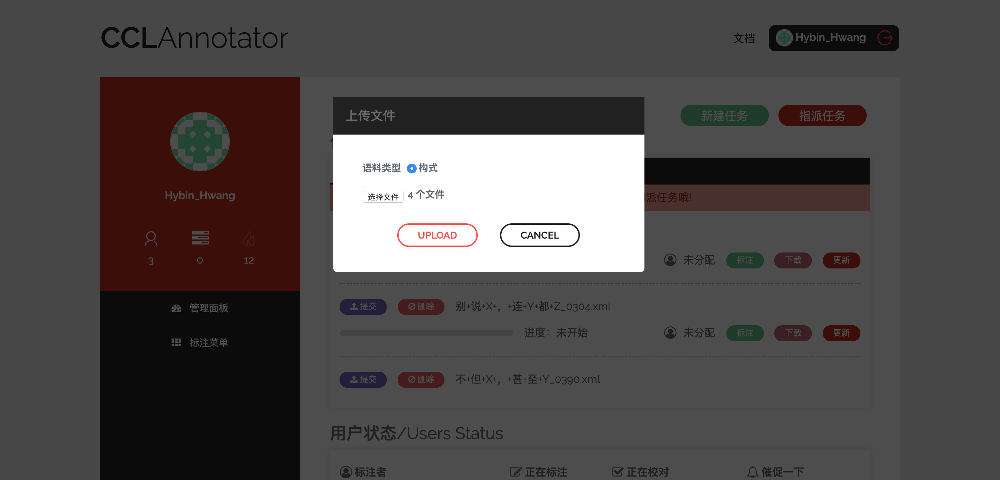
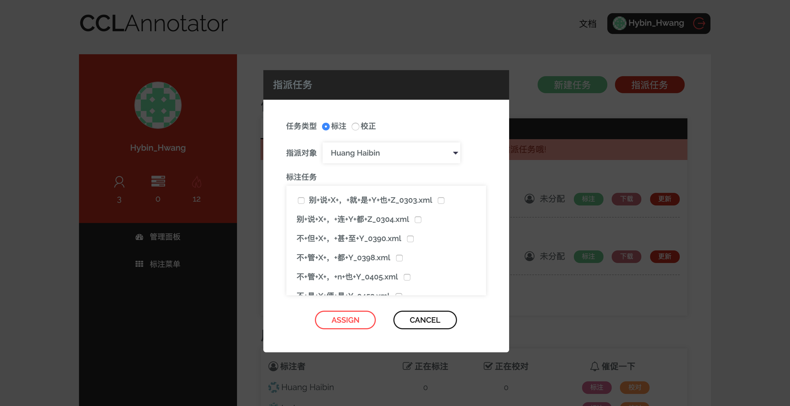
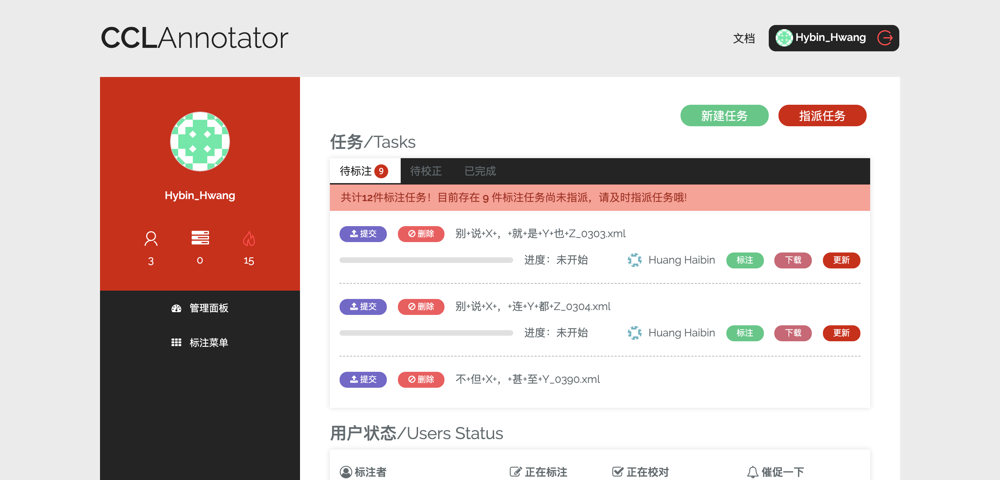
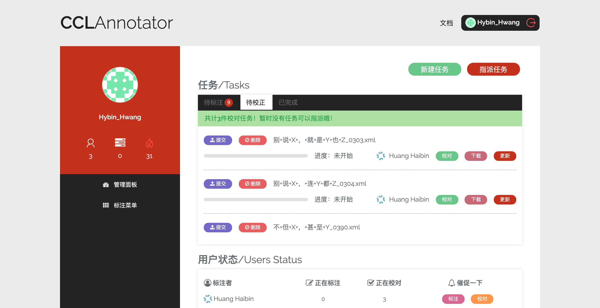
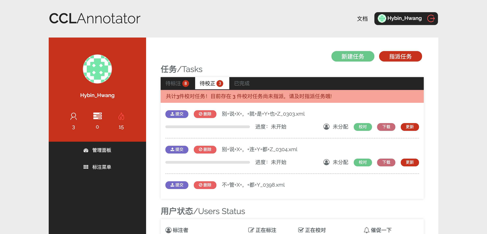
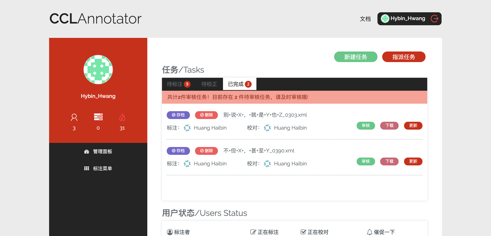
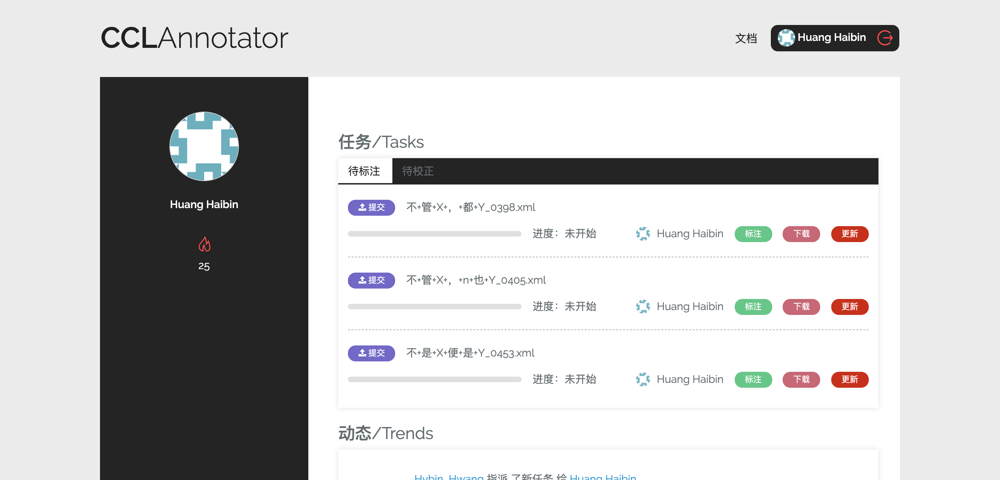
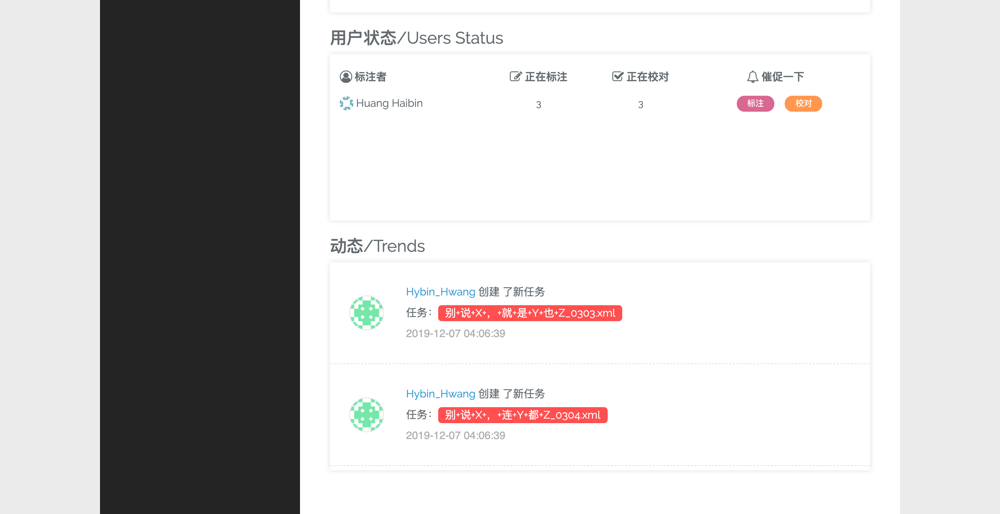
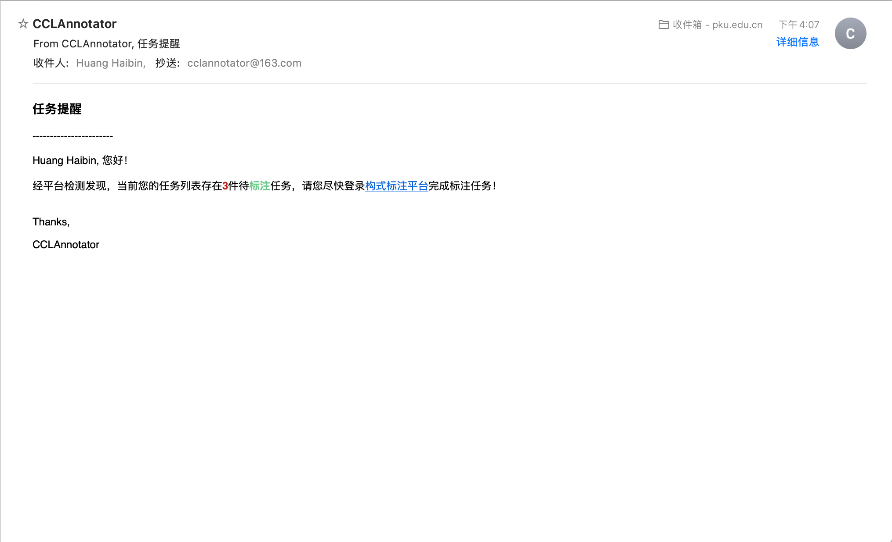

2. 任务管理¶
2.1. 标注任务周期描述¶
在 CCLAnnotator 构式语料标注平台上，任务管理的基本流程为：
平台管理篇¶
平台管理员登录平台，可以选择点击右上角的 新建任务 上传构式语料，其支持批量上传：
构式语料文件上传到服务器之后，平台管理可以向标注人员指派标注任务——点击右上角的 指派任务 按钮，即可批量指派任务：
标注任务指派成功之后，任务列表中的相应任务会出现相应的标注人员：
同时，平台管理员具备最高权限，其可以选择 删除 、 更新 、 提交 文件：删除 文件不仅意味着任务取消，与之对应的构式语料文件也会被服务器删除；更新 文件则意味着平台管理员可以远程更新语料文件；提交 文件则表示平台管理员认定该任务可以进入下一阶段。
警告
删除 、 更新 、 提交 均属于不可撤回操作，平台管理员进行相应操作之前，应再三确认。
当标注人员完成语料标注，点击 提交 之后，相应的任务会进入下一阶段，即 校对 阶段。此时，平台管理员需要向标注人员指派校对任务——点击右上角的 指派任务 选择 校正 ，即可批量指派校对任务：
校对任务指派成功之后，任务列表中的相应任务会出现相应的校对人员：
此外，需要注意的是，任务列表会实时显示 已指派 和 未指派 任务的数量：
同时，对于已完成校对的任务，平台管理员需要进行审核，审核通过之后，方可进行存档：
标注人员篇¶
标注人员的标注和校对权限需平台管理员授权，而后被指派任务后，个人页面上将出现相应的任务列表：
标注人员可以点击 标注 或 校对 按钮开展标注或校对任务，此外，标注人员亦可以下载相应的语料文件进行线下标注，标注完成后，点击 更新 上传文件；之后，重新进入平台设计的标注区，点击 SAVE 即可更新标注/校对进度。
当标注人员认为自己已经完成标注/校对，则可以点击 提交 按钮，使任务进入下一阶段，并等待新的任务指派。
2.2. 任务注意事项¶
离线标注¶
注解
平台对于语料文件有相对严格的要求，并为之设计了相应的 .xsd 文件作语法检查，点击 此处 下载，并将其置于语料文件相同的文件夹下。
对于语料文件的基本结构，其描述如下示例：
<document xmlns="http://ccl.pku.edu.cn" xmlns:xsi="http://www.w3.org/2001/XMLSchema-instance" xsi:schemaLocation="http://ccl.pku.edu.cn construction.xsd">
<!-- ... -->
<sentence annotated="1">text<cxn type=""><variable>text</variable><constant>text</constant></cxn>text</sentence>
<!-- ... -->
</document>
如上所示，一份语料文件包含 <document> 作为根节点，其子节点 <sentence> 表示一个句子，内部则又包含一个或多个 <cxn> 节点表示构式。节点 <cxn> 包含 <variable> 、 <constant> 、 <others> 节点，分别表示变项、常项和非构式成分。
另外，需要注意的是，节点 <sentence> 具备属性 annotated ，其取值为 0 或 1 ；而节点 <cxn> 则具备 type 这一基本的属性，其他属性由 type 决定。
任务催促¶
假如平台管理员认为标注人员进度偏慢，可以通过催促功能发送邮件，对之进行催促：
收到催促的标注人员则会收到相应的催促邮件：
注解
CCLAnnotator 构式语料标注平台使用的是163邮箱提供的免费SMTP服务，相对不稳定，偶尔会发生邮件发送失败的问题。